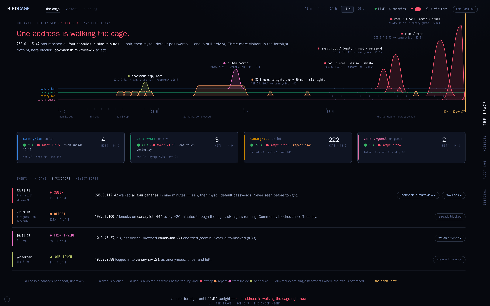
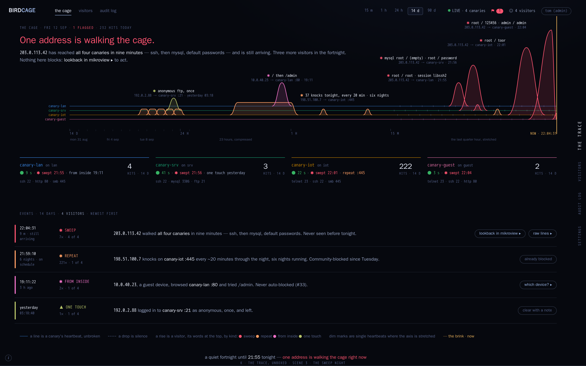

One layout, built from the round-4 verdict: run the four lines very close together, and blips raise up above, with nice curves and a label … full width, but only a small vertical … Beneath it, the canary tiles/cards, and beneath that the events. The four heartbeats sit in one tight band across the whole width. A visitor is a smooth rise above its canary's line with its words at the top; silence is a drop below the band. Under the band, a tile per canary; under the tiles, the events.
The two directions differ only in the tiles. Each page is one URL that scrolls through three scenes: a quiet fortnight (5 Sep), a canary gone silent, the sweep night (12 Sep).
Verdict 2026-09-12: the boxed tiles (J), with the box outline carrying the canary's colour instead of a bar: round 6. K dropped.
The canary tiles are cards: a raised surface, a hairline border, the canary's colour as a bar down the left edge.

direction-j-trace.html ▸ scene 1 · a quiet fortnight scene 2 · canary-iot gone silent scene 3 · the sweep nightSame tiles without the card: text on the void, a single rule in the canary's colour along the top. Closer to mikroview's free chrome.

direction-k-trace-unboxed.html ▸ scene 1 · a quiet fortnight scene 2 · canary-iot gone silent scene 3 · the sweep night